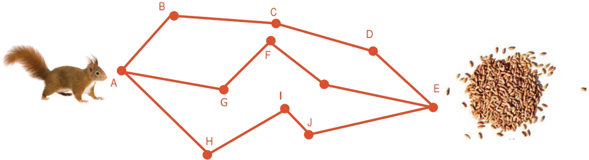

- What time will it be 5 hours after 22:35 hours ?
- 2:30 hours b) 3:35 hours
- 4:35 hours d) 5:35 hours
- 2 years is equal to months.
- 25 b) 30 c) 24 d) 5
Exercise 2.3

- Two pipes whose lengths are 7 m 25 cm and 8 m 13 cm joined by welding and then a small piece 60 cm is cut from the whole. What is the remaining length of the pipe?
- The saplings are planted at a distance of 2 m 50 cm in the road of length 5 km by saravanan. If he has 2560 saplings, how many saplings will be planted by him? how many saplings are left?
- Put mark in the circles which adds upto the given measure.

- Make a calendar for the month of February 2020. (Hint: January 1st 2020 is Wednesday)
- Observe and Collect the data for a minute:

- A squirrel wants to eat the grains quickly. Help the Squirrel to find the shortest way to
reach the grains. (Use your scale to measure length of the line segments)

- A room has a door whose measures are 1 m wide and 2 m 50 cm high. Can we take a bed of 2 m and 20 cm length and 90 cm wide into the room.?
- A post office functions from 10 a.m to 5.45 p.m with a lunch break of 1 hour. If the post office works for 6 days a week, find the total duration of working hours in a week.
- Seetha wakes up at 5.20 a.m. She spends 35 minutes to get ready and travels 15 minutes to reach the railway station. If the train departs exactly at 6:00 a.m, will Seetha catch the train?
- A doctor advised Vairavan to take one tablet every 6 hours once in the 1st day and once
every 8 hours on the 2 and 3 day. If he starts to take 9.30 a.m first dose. Prepare a time chart to take tablet in railway time.
nd rd